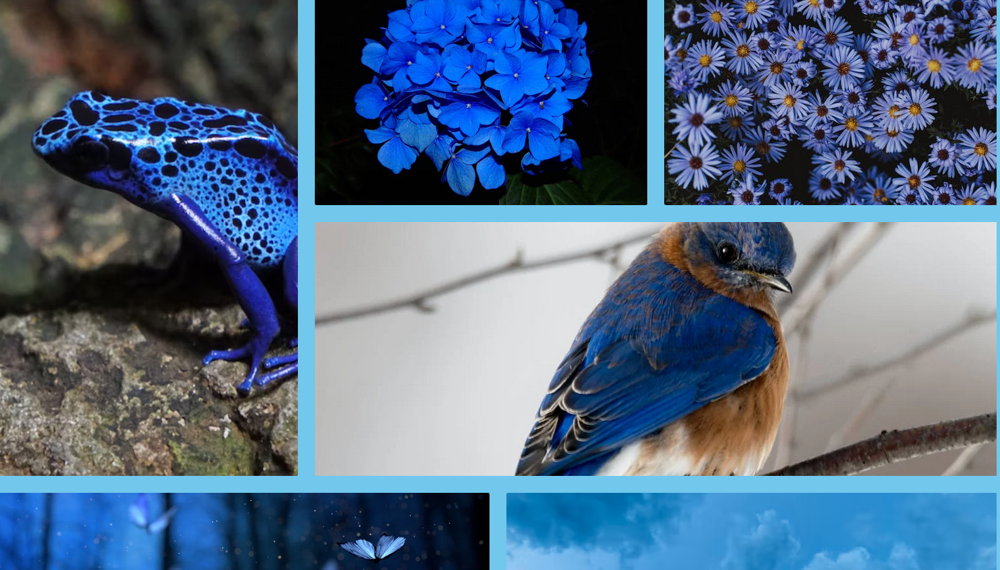

Project Gallery
Welcome to my project gallery! Most of these projects were coded with HTML and CSS, with some vanilla Javascript, and a sprinkle of C#. I currently do mostly responsive web design projects and am working in developing proficiency in JavaScript. I also have a budding interest in C# and Unity and am planning to explore cybersecurity.
THIS PAGE IS CURRENTLY UNDER CONSTRUCTION
Breathtaking Blue Photo Gallery

This was the first HTML/CSS project I’d done in a while since Intro to Computer Science roughly two years ago. It was also the project that started off my first ( and hopefully not last) Kode With Klossy experience. With this project, I reviewed basic HTML and CSS and improved my skills with CSS Flexbox. The project is inspired by my love of the color blue.